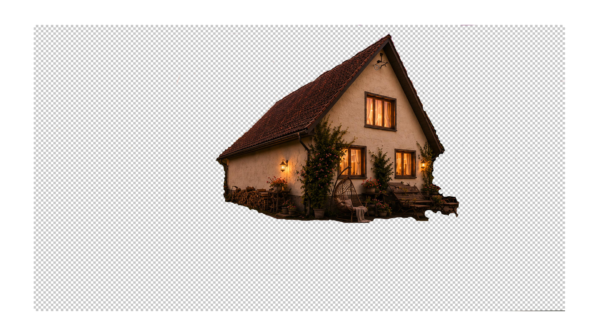

A digital hearth for the chronicles of a quiet house, garden seasons, stubborn engineering and small domestic victories.
House systems, seasonal maintenance and engineering lore.
Water treatment cycles, filters and septic chronicles.
Plants, lawns, strawberries and quiet evenings outdoors.
Guests, storms, sunsets and life in Heartshire.